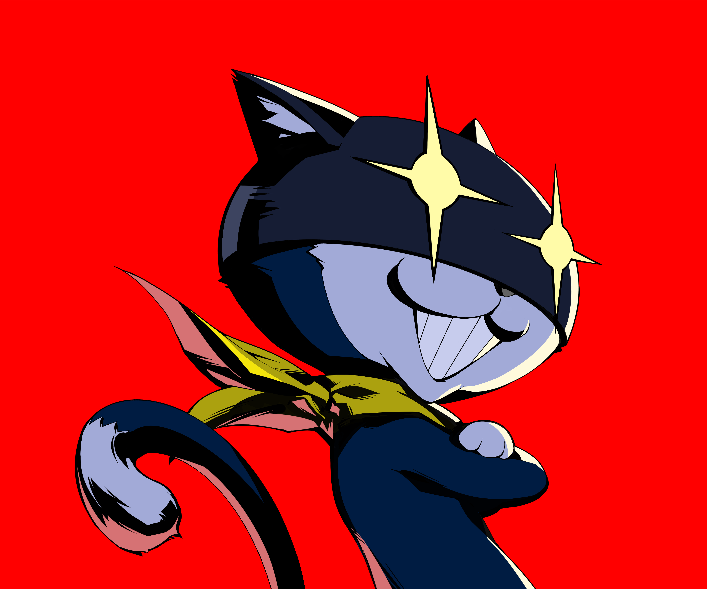
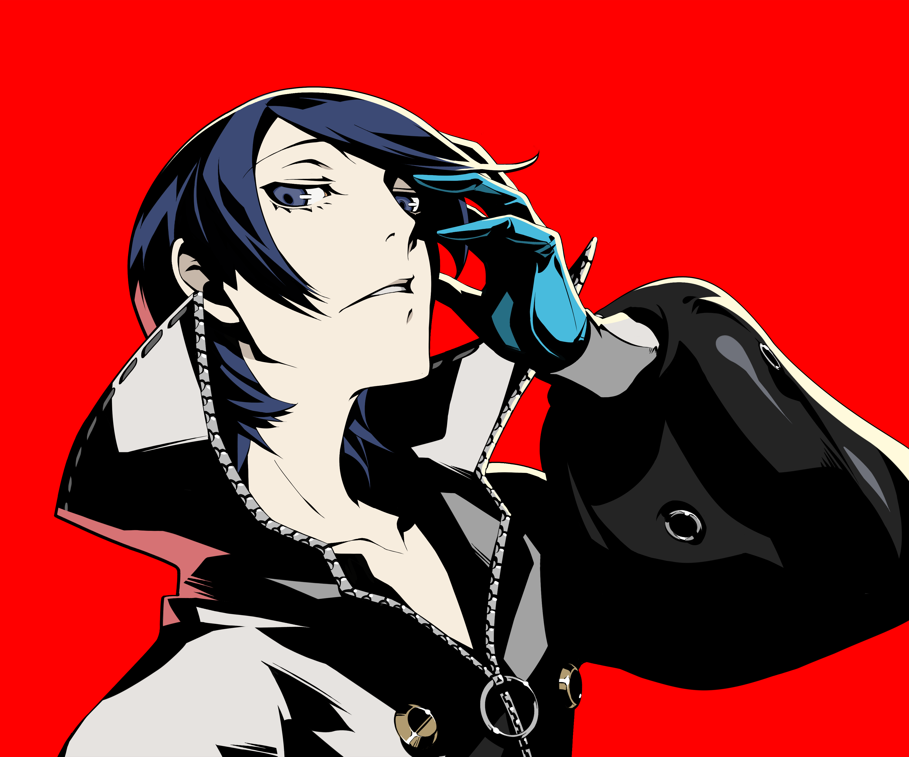
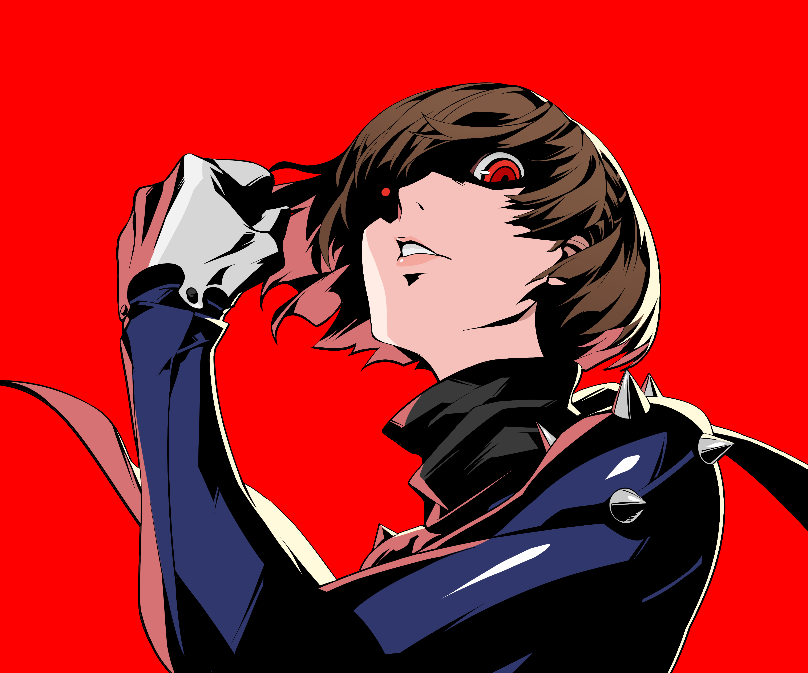
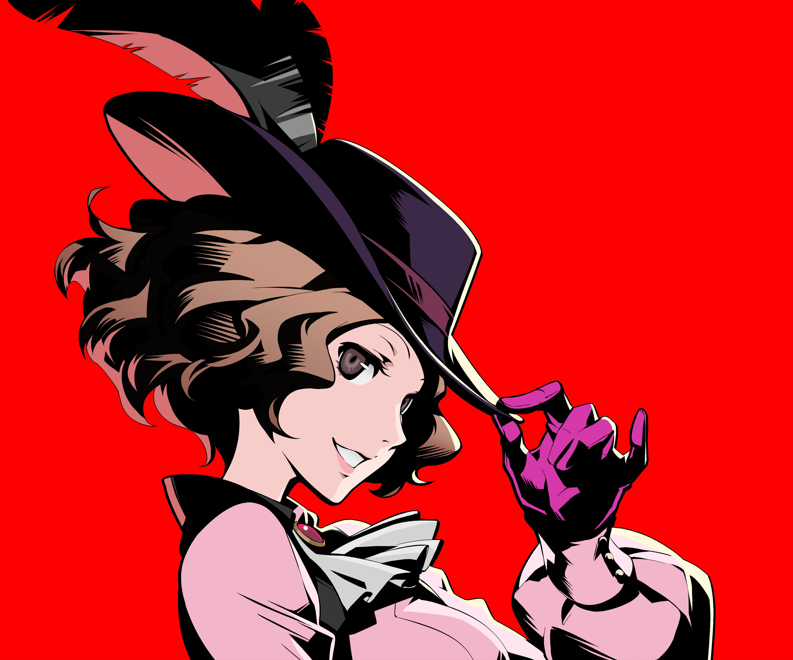

Joker
The Leader of the Phantom Thieves, a second-year high school
student who transfers to Shujin Academy in Tokyo, after a false
assault charge issued by a high-profile politician, which caused
him to end up with a one-year probation sentence.

Mona
Second Member of the Phantom Thieves, Morgana is an amnesiac that
remembers almost nothing about his past or himself, believing that
the cause is the distortions within Mementos. This causes him to
lose his sense of self in the process, and wishes to get it back.
Skull
Third Member of the Phantom Thieves, Ryuji originally came from a
household with an abusive father, who eventually abandoned him and
his mother. A student at Shujin Academy and a former track star
who lives a double life as a Phantom Thief.
Panther
Fourth Member of the Phantom Thieves, Ann is a second year high
schooler at Shujin Academy. Ann is the classmate of the
protagonist in 2-D, and she and Ryuji Sakamoto were classmates in
middle school. Due to her foreign blood and living abroad before
the story, she does not have many friends there and is considered
an outcast in Shujin.

Fox
Fifth Member of the Phantom Thieves, Yusuke is an honor student
who takes an art course at Kosei High School. He was raised by
Madarame as a foster parent, as his mother died when he was three.
Therefore, he does not remember her and Madarame took great care
of him. As he grew up, he was tutored art by Madarame.

Queen
Sixth Member of the Phantom Thieves, The student council president
of Shujin Academy who lives a double life as a Phantom Thief. She
and her sister lived alongside their father since their mother
died when they were young. As he was not home often, the sisters
disliked him. Unfortunately, three years ago, he was murdered.
Oracle
Seventh Member and navigator of the Phantom Thieves, Futaba is the
daughter of cognitive psientist Wakaba Isshiki; her father is
unknown. Due to her high intelligence compared to other children
around her, she was bullied often. At some point, Futaba, under
the codename "Medjed," began acting as a "hacker of justice,"
becoming well known.

Noir
Eighth Member of the Phantom Thieves, Haru is a third year student
in Shujin Academy and the daughter of the current president of
Okumura Foods, Kunikazu Okumura. While Okumura used to genuinely
care for his daughter, he had grown so corrupt and over-ambitious
that he is willing to do anything he can do to gain absolute
power.
Crow
Ninth Member of the Phantom Thieves, Akechi is a high-school
detective, coupled with his handsome features, makes him highly
popular among the general public and he is touted as "The Second
Coming of the Detective Prince." His intelligence and smooth-talk
earned him enough trust from the police to conduct his own
investigations.